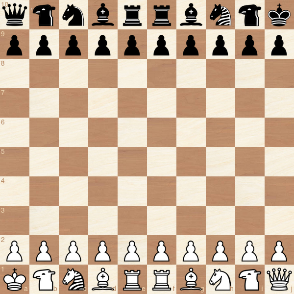

Tactalaris
A Mythical Chess Variant from the 10×10 Universe
Built from a plausible adaptation of the classical chess architecture to the 10x10 board, featuring an explosive alternative to the castling rule that promotes razor sharp play.
Board
The board is extended to 100 (10x10) squares. The files are labeled with the letters a-j, the ranks with the numbers 1-10. The lower right square of the board is white.
Mounted Warriors
Tactalaris adds two new members to the squad, the camel and the zebra. Especially the camel is known to be a very old piece which has already been used in the medieval Tamerlane Chess. Both pieces have a worth and abilities similar to the knight, but with a different set of target squares.
While the knight reaches all squares in a two square distance that cannot be reached by rook or bishop, camel & zebra have similar abilities for the squares in a three square distance. Both pieces are leapers. The camel is color-bound like the bishop, the zebra is not. The following diagram shows how they fit into the picture:

Or in separate diagrams:


This results in six complementary minor pieces, each of them targeting an exclusive set of squares that none of the other five pieces can reach.
Pawns
They can move up to three steps forward when placed on the initial square.
Up to two steps forward when placed on the third, fourth or fifth rank.
One step forward when placed on the sixth rank or higher.
This means a pawn can reach the promotion field within five moves, which is the same number of moves as in classical chess:

En passant capturing is possible each time a pawn passes an enemy pawn by moving more than one square forward in one move:

Setup
The castling rule is replaced by the rule that kings are always start on the first and the last square of the board. The remaining pieces are placed as follows:

! One special rule is added: To give Black multiple opening options for any setup, a white camel or zebra can't make the first move.
If you want to shuffle to avoid opening theory, the king positions remain fixed while all other pieces are randomly placed. 14400 setups are possible. A sample:

For offline play without a dice the following placement rules can be applied:
Black starts the placement phase by positioning the first piece. The same piece is automatically placed then on the corresponding square on White's backrank.

Players now take turns until all pieces are placed.
Bishops & camels have to occupy different square colors (obviously). To minimize referee calls, the following
! special rule is added: Amongst the first six pieces placed must be both bishops and camels.
After the the setup is complete, the game starts with White's first move.
Notes
Design
Upvaluing the pawns by making them faster seemed necessary to keep the spirit of the original game that includes fast confrontation and a broad spectrum of possibilities for piece sacrifices.
Comparable to classical chess, three pawns roughly compensate for a minor piece, five for a rook and nine for a queen.
Adding minor pieces instead of heavy ones like the two pieces that are mostly used for a 10x board - the chancellor and the archbishop - helps keeping the subtility of the original game.
In earlier versions I experimented with a 16-square leaper that combines the movements of camel and zebra. This piece would be worth about a rook and offers insane tactical resources, but test showed that it is quite hard to handle for humans and increases the number of heavy pieces over a healthy limit.
10x10 should faciliate gambits and sacrifices in general, since one pawn unit represents a lower fraction of the complete material stock.
Chances for an asymmetrical material distribution - one of the most tension creating features in classsical chess - are increased as well.
The knight obviously suffers from longer routes on the bigger board, but controls on average more squares than in classical chess.
Interestingly, some endgame tests with Fairy Stockfish revealed that the camel might be worth slightly more than the zebra, since it reaches, on average, more squares. For the same reason the knight might worth more than zebra and at least worth as much as the camel. Does the average numbers of available squares beat range?
The king might be the only piece that is less powerful on the bigger board.
Placing the kings in diametral opposition is a very natural alternative to the castling rule and provides its benefits - improved king safety and piece coordination - while creationg tension right from the start.
This king setup also much better suited to avoid "trash positions" when shuffling the pieces for the start position - as it happens regularly in Chess960.
Links
I developed a web app where you can analyze and play Tactalaris:
tactalaris.com
Links for further research:
ChessXp
The camel on chessvariants.com
The zebra on chessvariants.com
Reddit: Why is the (2,3) leaper named "Zebra"?
Lawyers
Game rules, as abstract ideas or methods of organizing human activity, are generally not eligible for copyright protection or patents.* And chess is for the community anyway. So just for clarification:
Tactalaris is common heritage of mankind, as chess is. So use it as you want. But I don't complain if you give credit to the author 🗿.
------------------------------
By
Ulrich Schwekendiek
Berlin
broullis@gmx.com
2024
* However, copyright applies to a specific verbalization of the game rules, which is considered to be a literary work. So, if you use this paper without major modifications, you should put my name under it. Thank you ❤️